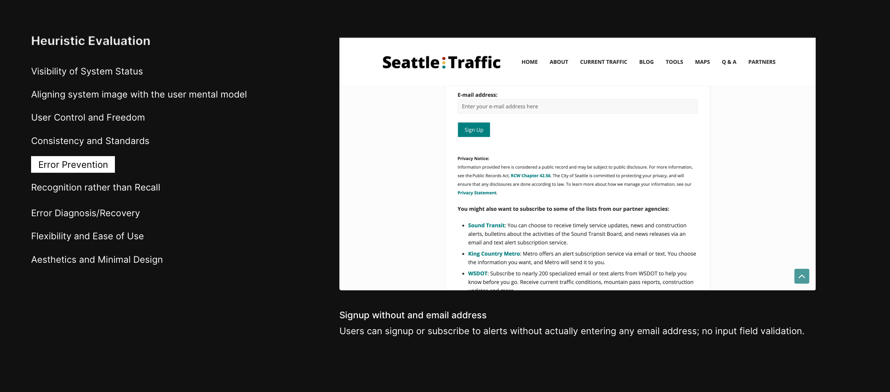
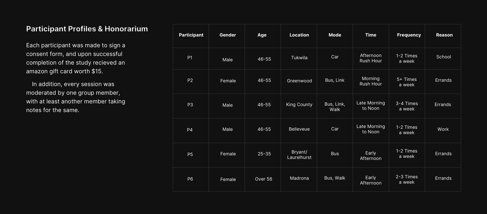

Domain
Usability Testing, Heuristic Evaluation, Research
Type
Graduate Coursework [Group]
Timeline
Jan, 2019 - Mar, 2019 [3 Months]
1. Background
The Seattle Traffic Website was created with the intent to provide a one-stop-shop for all resources and information related to the upcoming changes to the Seattle Downtown transportation system. This information could include ongoing construction projects that might affect a route, congestion and delays, and real-time updates on their progress.
1.1 Target Audience
Part of the study involved actually finding 'Who would actually use this website?'. They wanted to find out who could benefit out of it, and once they do, based on conclusive data, they wanted to tailor the experience according to those primary users.
To begin with, The website aims to cater a wide spectrum of audience - anyone who use the public transport, travels to/via downtown, or are simply interested in getting information about whether their commute might get affected.
1.2 What is wrong with the website?
Without a concrete problem to approach, the felt the scope was very unbounded. So we decided to tackle specific questions in order to have some order in our study. We ended up on these 4 questions regarding whether our target users can:
- Find if their commute would be affected due to construction or closures
- Find alternative routes to travel
- Find tools to support different commute mediums
- Find tools to plan their commute ahead of time
1.3 Heuristic Evaluation
We also discovered that we were unaware of what typical use-cases upon navigating the website looked like, so we couldn't moderate sessions without sufficient information. Hence, we decided to conduct a 'Heuristic Evaluation'. While most of the people think that this might introduce a 'designer bias' in the study, I personally feel the more context you have about wht you are dealing with, the more deeply you can resonate with user and their problems during sessions.
-

- 
2. Methods and Procedures
We recruited a diverse set of participants for the study. Apart from conventional recruiting methods, we also posted an ad on ‘Craigslist’ . Participants received a $25 gift card upon successful completion of the study.
We conducted our tests on UW Campus premises and used the following equipment:
- Mac/Windows Laptop to conduct the actualy study
- Built-in Laptop Camera to record audio and video of user actions
- 'Zoom' to communicate the sessions to other note takers not in the room.
-

- 
3. The study
3.1 Task List
After conducting our heuristic evaluation and seeing the results from our screening questionnaire, we realised that it would be helpful to break our study in two parts - Testing the 'Discoverability of a tool/map', and only if a participant is able to navigate to that tool/map, then testing the 'Usability of the tool/map'. Breaking down into two subsequent tasks further helped us streamline the study, and focus more on the aspects that needed immediate attention.
3.2 Study Results
Here are the results from the moderation of six tasks, divided based on discoverability and usability.
4. Impact
We were fortunate enough to present our insights at the headquarters of Seattle Department of Transportation. As a direct result of our presentation, SeattleTraffic made some immediate chages to the website which were high on severity scale, whereas keeping note of those that were less important.
4.1 Key learnings
- Being my first time moderating usability sessions, I learnt it is important to take control and be adaptive; you cannot expect to just read the script and ask users to do the tasks. You have to come up with a contrived method of not actually saying what you want, and make the user do the same.
- It is important to be mindful of how many soft prompts do you give the participant during the session; too many and its practically you doing the task. Too few, and you gain no insight.
- Note taking was a big part of each session, and we found having a common template for taking notes across the team helped a lot.
- Be wary of hardware configurations - not everyone is adept at using a macbook/multi-touch trackpad to navigate around, esp the elderly.